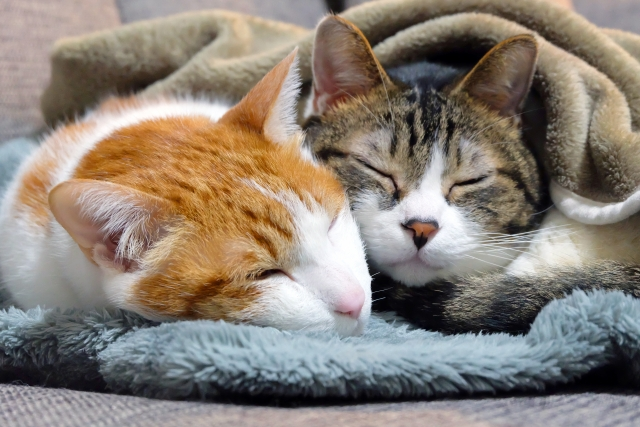

猫の一日
ひたすら寝ています。
猫は毎日12~16時間は睡眠をとると言われています。 ただし、熟睡している時間は意外と少なく、ほとんどが浅い眠りです。 物音がするとすぐ目を覚ますのはそのせいなんですね。

ねこの情報をお届け！
猫は毎日12~16時間は睡眠をとると言われています。 ただし、熟睡している時間は意外と少なく、ほとんどが浅い眠りです。 物音がするとすぐ目を覚ますのはそのせいなんですね。